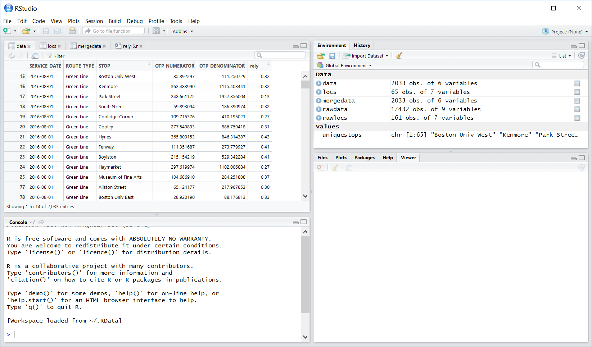
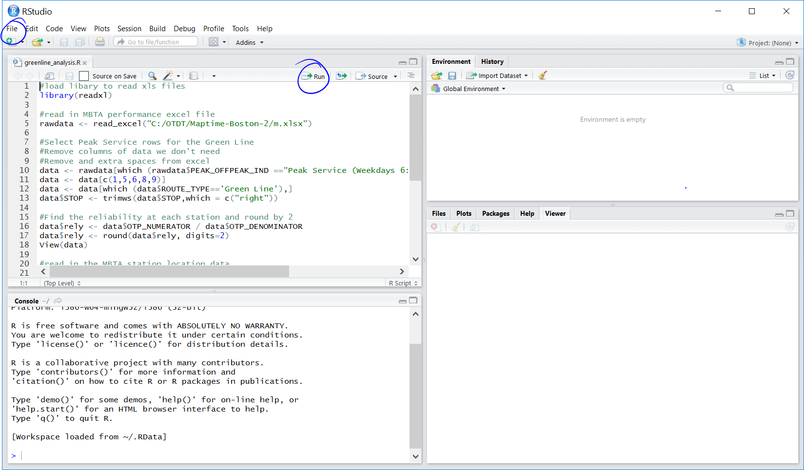

Young Professionals In Transportation - Baltimore - August 08 2018
Where to find transit data
Strategies on wrangling transit data
Mapping a transit system
Evaluating access to a transit system
Historical Archives (e.g. CSV)
General Transit Feed Specification Static and Realtime ( GTFS)
Shapefiles
One reason: coverage provides access to jobs and services
Mobility, Economic Opportunity and New York City Neighborhoods
Among their findings, neighborhoods with the most access to jobs have higher median income, and neighborhoods with low access typically have higher rates of car commuting.
The Executive Office of Energy and Environmental Affairs (EEA) of MA created an Environmental Justice Policy to address communities who are disproportionally impacted by environmental risks. Communities were identified by: income, national origin, race, color, and English proficiency.
Turn to your neighbor and say hi.
Download the workshop data.
mbta-stops.csv contains coordinates of the stations.
Source is from the MBTA Rapid Transit Station shapefile, with some manual clean up.
Unzip ej2010.zip
Launch R Studio
R Studio Overview
File -> Open File -> 04-access-stations.R
Set Working Directory. Then "Run" through each step.
Switch to RStudio
What do you see?
Where is the most and least access?
What additional data would be useful?
What is missing from our analysis?
How would you use this data and map responsibly?
You, TransitCenter, Nature of Cities, YPT
Stay in touch: Open Transit Data Toolkit Email List
Resources: Transit Data
Other Resources:
NYC MTA Developers Google Group
Mass DOT Developers Google Group
Google, Stack Overflow, Stack Exchange
Resources: Performance